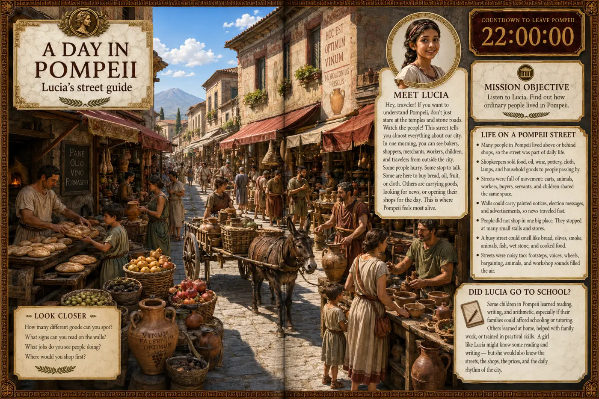

Step into the story
Unusual first-person scenes put readers at street level—among markets, bakeries, baths and painted Roman homes.
Time Traveler’s · Dangerous Destinations
You have arrived in Pompeii.
The volcano erupts tomorrow.
A visual history adventure that sends young readers into the streets, homes and final 24 hours of the ancient city.
Move to explore the book
See inside the book
Scroll until the whole book is visible, then keep moving to open it. Use the arrows or chapter markers to explore five real interior spreads.

Experience ancient Pompeii through the first-person view of a time traveller.
Why readers enjoy it
Pompeii: The Last Day replaces textbook distance with a vivid, respectful first-person journey. Readers notice the warnings, make sense of the science and experience why this city still fascinates us.
Unusual first-person scenes put readers at street level—among markets, bakeries, baths and painted Roman homes.
Maps, timelines and visual science explain ash, pumice and volcanic clouds without flattening the event into a list of facts.
A clear 24-hour narrative creates real suspense while staying age-appropriate, respectful and completely gore-free.
Reader reactions
“The first-person viewpoint made my son feel like he was actually walking through Pompeii. He finished it in one sitting.”
“The artwork is extraordinary. Every spread has something new to notice, and the history never feels like homework.”
“My daughter usually avoids nonfiction, but she kept bringing this book back to show us facts about volcanoes and Roman homes.”
“Exciting without being graphic. It gave my kids the drama of the event while treating the people and history respectfully.”
“The unusual you-are-there format was the magic. Both of my children asked if there would be another dangerous destination.”
Frequently asked
No. The eruption is presented with real tension and historical honesty, but there is no gore or graphic depiction of death. The treatment is designed for readers ages 8+.
It is visual nonfiction told through an immersive mission-like journey. The first-person viewpoint helps readers experience the setting while maps, timelines, science and archaeology explain the evidence.
Yes. Its Roman daily-life content, volcano science, maps and archaeology make it a useful enrichment book or starting point for a project.
No. Readers see Pompeii before, during and after the disaster—from homes, bakeries and baths to excavation and the preserved city today.
Yes. It belongs to Time Traveler’s: Dangerous Destinations, a visual history series designed to place readers inside extraordinary moments.
Pompeii: The Last Day
A full-color visual history adventure for curious readers ages 8+.
 PaperbackView on Amazon↗You’ll continue securely on Amazon.
PaperbackView on Amazon↗You’ll continue securely on Amazon.